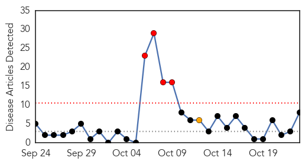
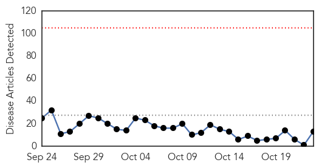
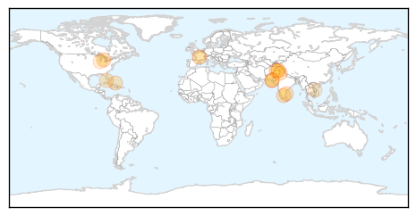
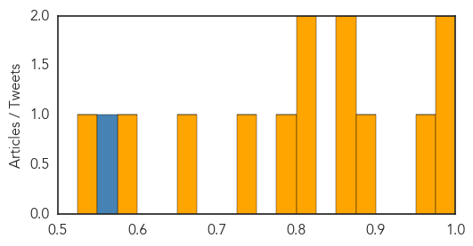

Hepatitis
30-Day Web Trend
4 alerts, 1 warnings

30-Day Twitter Trend
0 alerts, 0 warnings

Article Locations

Article Confidences

Top Articles:
- 0.967
- 2 more patients test positive for hep C, Health News & Top Stories
- 0.962
- Vaccinations aren’t just for kids
- 0.836
- Doctors are failing spreading the HPV vaccine, Research says
- 0.609
- Sdp calls for release of emails regarding hep c outbreak !
- 0.554
- Cuban HB vaccine undergoes trials in eight countries
- 0.547
- Cuban HB vaccine undergoes trials in eight countries
- 0.540
- Typhoid not on Fomema checklist
- 0.532
- Doctors, Not Parents, Are The Biggest Obstacle To The HPV Vaccine
Top Tweets:
-
No tweets found for Oct 23, 2015
Dengue Fever
30-Day Web Trend
0 alerts, 0 warnings

30-Day Twitter Trend
3 alerts, 0 warnings

Article Locations
Article Confidences
Top Articles:
- 0.995
- Hospitals in Asia overwhelmed with growing number of dengue cases
- 0.988
- ICT Health Department says dengue larva breeding will be controlled by mid November
- 0.958
- Perpetual sting: K-P govt’s indifference towards recurring dengue virus questioned
- 0.898
- Youngster dies of dengue fever at HFH
- 0.871
- Dengue Fever Vaccine Candidate
- 0.854
- Contagion: Dengue expert urges comprehensive plan
- 0.820
- KMC’s drive begins amid growing concerns over dengue cases
- 0.812
- Tamil Nadu first in the country in organ transplantation: Minister
- 0.793
- Three-year-old Succumbs to Dengue Fever
- 0.745
- WHO supports NEMA’s relief efforts after Hurricane Joaquin
- 0.665
- Mosquito Season Safety Tips
- 0.583
- Can Yelp help in tracking outbreaks of food poisoning?
- 0.546
- Viet Nam: Healthcare improvement for community to combat to climate change
Top Tweets:
- 0.705
- Flavivirus news: 1076 Dengue Cases Reported This Week in Delhi - NDTV: NDTV1076 Dengue Cases Re... https://t.co/gM4oPA1pMS pathogenposse
- 0.673
- Flavivirus news: Perpetual sting: KP govt's indifference towards recurring dengue virus questio... https://t.co/bFTSfN5Ipm pathogenposse
- 0.501
- Flavivirus news: Dengue Fever Cases Over 26600 in Taiwan - The New Indian Express: WantChinaTim... https://t.co/w3UPWZsrcn pathogenposse